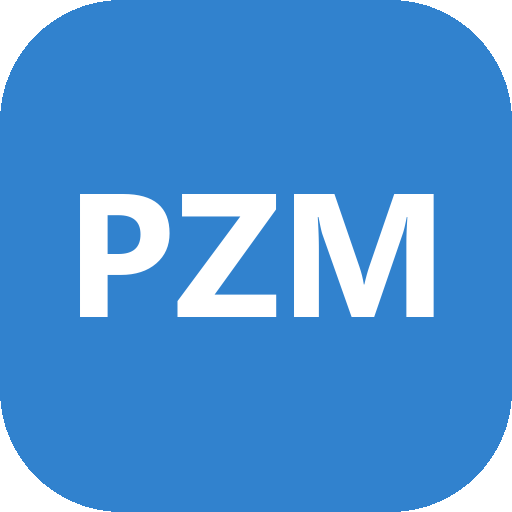

<!DOCTYPE html>
<html lang="zh-CN" data-theme="light">
<head>
<meta charset="UTF-8" />
<meta name="viewport" content="width=device-width, initial-scale=1.0" />
<title>隐私协议 — PZManager</title>
<meta name="description" content="PZManager 隐私协议:本地优先,无遥测无追踪;说明更新检查、Steam 请求与问题反馈涉及的数据处理。" />
<link rel="icon" type="image/png" href="pzm-logo.png" />
<link rel="apple-touch-icon" href="pzm-logo.png" />
<link rel="preconnect" href="https://fonts.googleapis.com" />
<link rel="preconnect" href="https://fonts.gstatic.com" crossorigin />
<link href="https://fonts.googleapis.com/css2?family=Inter:wght@400;500;600;700;800&display=swap" rel="stylesheet" />
<script>
  // 嵌入模式(?wall=true):隐藏顶栏 / 目录 / 页脚,只渲染正文,供启动器内嵌展示。
  if (new URLSearchParams(location.search).get("wall") === "true") {
    document.documentElement.dataset.wall = "true";
  }
</script>
<script>
  document.documentElement.dataset.theme =
    localStorage.getItem("pzm-theme") || "light";
</script>
<link rel="stylesheet" href="https://cdnjs.cloudflare.com/ajax/libs/font-awesome/6.5.2/css/all.min.css" />
<style>
  :root {
    --bg: #f7f8fa;
    --bg-soft: #eff1f4;
    --panel: rgba(17, 24, 39, 0.03);
    --panel-strong: rgba(17, 24, 39, 0.06);
    --border: rgba(17, 24, 39, 0.1);
    --text: #1a1d23;
    --text-dim: #5c6470;
    --accent: #2b7de0;
    --accent-soft: rgba(43, 125, 224, 0.1);
    --warn: #d97b06;
    --warn-soft: rgba(217, 123, 6, 0.09);
    --nav-bg: rgba(247, 248, 250, 0.82);
  }
  html[data-theme="dark"] {
    --bg: #0c0e12;
    --bg-soft: #14171d;
    --panel: rgba(255, 255, 255, 0.04);
    --panel-strong: rgba(255, 255, 255, 0.07);
    --border: rgba(255, 255, 255, 0.09);
    --text: #e8eaf0;
    --text-dim: #9aa1ad;
    --accent: #4da3ff;
    --accent-soft: rgba(77, 163, 255, 0.14);
    --warn: #ffb454;
    --warn-soft: rgba(255, 180, 84, 0.1);
    --nav-bg: rgba(12, 14, 18, 0.8);
  }
  * { margin: 0; padding: 0; box-sizing: border-box; }
  html { scroll-behavior: smooth; scroll-padding-top: 80px; }
  body {
    background: var(--bg);
    color: var(--text);
    font-family: "Inter", "Segoe UI", "Microsoft YaHei", "PingFang SC", system-ui, sans-serif;
    line-height: 1.75;
    -webkit-font-smoothing: antialiased;
    transition: background 0.3s ease, color 0.3s ease;
    overflow-x: hidden;
  }
  /* 全页极光背景 */
  body::before {
    content: ""; position: fixed; inset: -20%; z-index: -1; pointer-events: none;
    background:
      radial-gradient(38vw 38vw at 12% 18%, rgba(43, 125, 224, 0.14), transparent 65%),
      radial-gradient(34vw 34vw at 88% 28%, rgba(124, 92, 255, 0.11), transparent 65%),
      radial-gradient(30vw 30vw at 55% 90%, rgba(34, 184, 207, 0.1), transparent 65%);
    animation: aurora 16s ease-in-out infinite alternate;
  }
  html[data-theme="dark"] body::before {
    background:
      radial-gradient(38vw 38vw at 12% 18%, rgba(77, 163, 255, 0.12), transparent 65%),
      radial-gradient(34vw 34vw at 88% 28%, rgba(157, 124, 255, 0.09), transparent 65%),
      radial-gradient(30vw 30vw at 55% 90%, rgba(63, 208, 232, 0.08), transparent 65%);
  }
  @keyframes aurora {
    0%   { transform: translate(0, 0) scale(1); }
    50%  { transform: translate(2.5%, -2%) scale(1.06); }
    100% { transform: translate(-2%, 2.5%) scale(1.03); }
  }
  @media (prefers-reduced-motion: reduce) {
    body::before { animation: none; }
  }
  a { color: var(--accent); text-decoration: none; }
  a:hover { text-decoration: underline; }

  /* ---------- Top nav ---------- */
  .topnav {
    position: sticky; top: 0; z-index: 10;
    background: var(--nav-bg);
    backdrop-filter: blur(12px);
    border-bottom: 1px solid var(--border);
    animation: navIn 0.5s ease both;
  }
  .topnav::after {
    content: ""; position: absolute; left: 0; right: 0; bottom: -1px; height: 1px;
    background: linear-gradient(90deg, transparent, rgba(43, 125, 224, 0.55), rgba(124, 92, 255, 0.55), transparent);
  }
  @keyframes navIn { from { transform: translateY(-100%); } to { transform: none; } }
  .nav-inner {
    max-width: 1080px; margin: 0 auto; padding: 0 24px;
    display: flex; align-items: center; justify-content: space-between; height: 60px;
  }
  .nav-brand {
    display: flex; align-items: center; gap: 10px;
    font-weight: 700; letter-spacing: 3px; font-size: 15px; color: var(--text);
  }
  .nav-brand img { width: 28px; height: 28px; border-radius: 7px; }
  .nav-links { display: flex; align-items: center; gap: 22px; font-size: 14px; }
  .nav-links a { color: var(--text-dim); transition: color 0.15s ease; }
  .nav-links a:hover { color: var(--accent); text-decoration: none; }
  .theme-btn {
    background: var(--panel); border: 1px solid var(--border); color: var(--text-dim);
    width: 34px; height: 34px; border-radius: 9px; cursor: pointer;
    font-size: 15px; transition: color 0.15s ease, border-color 0.15s ease, transform 0.3s ease;
  }
  .theme-btn:hover { color: var(--accent); border-color: var(--accent); transform: rotate(20deg); }

  /* ---------- Layout ---------- */
  .layout {
    max-width: 1080px; margin: 0 auto; padding: 40px 24px 80px;
    display: grid; grid-template-columns: 230px 1fr; gap: 48px;
    align-items: start;
  }
  .toc { position: sticky; top: 84px; font-size: 13.5px; }
  .toc a {
    display: flex; align-items: center; gap: 10px;
    color: var(--text-dim); padding: 6px 12px;
    border-left: 2px solid var(--border); border-radius: 0 8px 8px 0;
    transition: color 0.15s ease, background 0.15s ease, border-color 0.15s ease;
  }
  .toc a:hover {
    color: var(--accent); text-decoration: none;
    background: var(--accent-soft); border-left-color: var(--accent);
  }
  .toc a i { width: 16px; text-align: center; }
  .toc .toc-title {
    font-size: 12px; letter-spacing: 2px; color: var(--text-dim);
    text-transform: uppercase; margin-bottom: 8px; padding-left: 12px;
  }

  main { min-width: 0; animation: fadeUp 0.6s ease both; }
  @keyframes fadeUp {
    from { opacity: 0; transform: translateY(16px); }
    to { opacity: 1; transform: none; }
  }
  .hero-line { padding: 8px 0 32px; border-bottom: 1px solid var(--border); margin-bottom: 8px; }
  .hero-line h1 {
    font-size: 32px; letter-spacing: 1px; font-weight: 800;
    background: linear-gradient(120deg, var(--text) 30%, var(--accent) 75%, #9d7cff);
    -webkit-background-clip: text; background-clip: text;
    -webkit-text-fill-color: transparent; color: transparent;
  }
  .hero-line p { color: var(--text-dim); margin-top: 8px; }

  section.doc { padding: 36px 0 8px; border-bottom: 1px solid var(--border); }
  section.doc:last-of-type { border-bottom: none; }
  section.doc h2 {
    font-size: 22px; margin-bottom: 18px;
    display: flex; align-items: center; gap: 12px;
  }
  section.doc h2 i {
    color: #fff; font-size: 15px;
    width: 34px; height: 34px; border-radius: 10px;
    display: inline-flex; align-items: center; justify-content: center;
    background: linear-gradient(135deg, var(--accent), #9d7cff);
    box-shadow: 0 4px 12px rgba(43, 125, 224, 0.3);
  }
  section.doc h3 { font-size: 16px; margin: 26px 0 10px; color: var(--text); }
  section.doc p { color: var(--text-dim); margin-bottom: 12px; font-size: 14.5px; }
  section.doc ul, section.doc ol { margin: 0 0 14px 22px; color: var(--text-dim); font-size: 14.5px; }
  section.doc li { margin-bottom: 6px; }
  section.doc b, section.doc strong { color: var(--text); font-weight: 600; }
  code {
    background: var(--panel-strong); border: 1px solid var(--border);
    border-radius: 6px; padding: 1px 7px; font-size: 13px;
    font-family: Consolas, "Cascadia Mono", monospace;
  }
  html[data-theme="dark"] code { color: #cfe3ff; }
  .kbd {
    background: var(--panel-strong); border: 1px solid var(--border); border-bottom-width: 2px;
    border-radius: 6px; padding: 1px 7px; font-size: 12.5px; white-space: nowrap;
  }

  .callout {
    border: 1px solid var(--border); border-left: 3px solid var(--accent);
    background: var(--accent-soft); border-radius: 0 10px 10px 0;
    padding: 12px 16px; font-size: 14px; color: var(--text-dim); margin: 0 0 16px;
  }
  .callout.warn { border-left-color: var(--warn); background: var(--warn-soft); }
  .callout b { color: var(--text); }

  table { width: 100%; border-collapse: collapse; margin: 0 0 16px; font-size: 14px; }
  th, td { text-align: left; padding: 9px 12px; border: 1px solid var(--border); color: var(--text-dim); }
  th { background: var(--panel-strong); color: var(--text); font-weight: 600; }

  .back-top { display: inline-block; margin: 40px 0 0; font-size: 13.5px; }

  footer {
    position: relative;
    border-top: 1px solid var(--border);
    padding: 32px 24px 44px; text-align: center;
    color: var(--text-dim); font-size: 13px;
  }
  footer::before {
    content: ""; position: absolute; top: -1px; left: 0; right: 0; height: 1px;
    background: linear-gradient(90deg, transparent, rgba(43, 125, 224, 0.5), rgba(124, 92, 255, 0.5), transparent);
  }
  footer .links { display: flex; flex-wrap: wrap; justify-content: center; gap: 24px; margin-bottom: 12px; }
  footer .links a { transition: color 0.15s ease; }
  footer .links a:hover { color: var(--accent); }
  .afdian-link { color: var(--accent); font-weight: 600; }

  @media (max-width: 860px) {
    .layout { grid-template-columns: 1fr; gap: 24px; }
    .toc { position: static; display: none; }
  }
  /* ---------- wall=true 嵌入模式 ---------- */
  html[data-wall="true"] .topnav,
  html[data-wall="true"] .toc,
  html[data-wall="true"] footer,
  html[data-wall="true"] .back-top { display: none !important; }
  html[data-wall="true"] .layout {
    grid-template-columns: 1fr;
    max-width: 880px;
    padding-top: 28px;
  }
  html[data-wall="true"] { scroll-padding-top: 24px; }
  </style>
</head>
<body>

<nav class="topnav">
  <div class="nav-inner">
    <a class="nav-brand" href="index.html">PZMANAGER</a>
    <div class="nav-links">
      <a href="index.html#features">功能</a>
      <a href="docs.html">文档</a>
      <a href="https://github.com/sanyectop/pzmanager-main" target="_blank" rel="noopener" title="GitHub"><i class="fa-brands fa-github"></i> GitHub</a>
      <a href="https://ifdian.net/a/sanyee" target="_blank" rel="noopener" title="爱发电 · 叁葉" class="afdian-link"><i class="fa-solid fa-mug-hot"></i> 爱发电</a>
      <button class="theme-btn" id="themeBtn" title="切换主题"><i class="fa-solid fa-moon"></i></button>
      <a href="index.html#downloads">下载</a>
    </div>
  </div>
</nav>

<div class="layout">
  <aside class="toc">
    <div class="toc-title">本页目录</div>
    <a href="#overview"><i class="fa-solid fa-shield-halved"></i>概述</a>
    <a href="#collect"><i class="fa-solid fa-list"></i>我们收集的信息</a>
    <a href="#local"><i class="fa-solid fa-hard-drive"></i>仅保存在本地的数据</a>
    <a href="#third-party"><i class="fa-solid fa-share-nodes"></i>第三方服务</a>
    <a href="#not-do"><i class="fa-solid fa-ban"></i>我们不会做的事</a>
    <a href="#retention"><i class="fa-solid fa-clock-rotate-left"></i>数据保留与删除</a>
    <a href="#changes"><i class="fa-solid fa-rotate"></i>政策变更</a>
    <a href="#contact"><i class="fa-solid fa-envelope"></i>联系我们</a>
  </aside>
<main>
      <div class="hero-line">
        <h1>隐私协议</h1>
        <p>生效日期:2026-11-04 · 本协议适用于 PZManager 启动器与官方网站(pzm.sanyec.top)。</p>
      </div>

      <section class="doc" id="overview">
        <h2><i class="fa-solid fa-shield-halved"></i>概述</h2>
        <p>PZManager 是一款<b>本地优先</b>的桌面工具:所有功能都在你的电脑上运行,没有账号体系,没有广告与统计追踪。</p>
        <p>我们遵循的数据原则很简单:<b>能用本地解决的绝不联网,需要联网的只传必要内容,你主动提交之前不发送任何东西。</b></p>
      </section>

      <section class="doc" id="collect">
        <h2><i class="fa-solid fa-list"></i>我们收集的信息</h2>

        <h3>1. 启动器日常使用</h3>
        <p>启动器<b>不收集、不上传</b>任何使用数据:没有遥测、没有埋点、没有崩溃自动上报。你的操作只记录在本地日志文件里(见<a href="#local">仅保存在本地的数据</a>)。</p>

        <h3>2. 检查更新</h3>
        <p>启动器启动时会请求更新源(<code>pzmapi.sanyec.top/api/latest.json</code>,静态 JSON 文件)判断是否有新版本。这是一次普通 HTTP 请求:<b>不包含</b>你的账号、模组列表或任何本机信息。托管平台(Cloudflare)可能按行业惯例在服务端日志里记录请求 IP 与时间,那是平台行为,我们不在其中做用户画像。</p>

        <h3>3. Steam 相关请求</h3>
        <p>浏览创意工坊、读取新闻、下载预览图时,请求直连 Steam,或在大陆网络下经 <b>Steam API 中转</b>转发(可在设置中查看与修改)。中转服务器只转发并短期缓存 Steam 公开内容,不涉及你的 Steam 账号凭据;启动器读取本机 Steam 信息(登录用户、库目录)完全在本地进行,不会发送给任何服务器。</p>
        <p>开发者新闻与创意工坊说明的<b>翻译文本</b>(只含 Steam 公开内容,不含本机信息)在目标语言为中文、英文或俄文时,会经中转服务器的<b>离线翻译接口</b>处理(自建 Argos 模型,不调用第三方在线翻译);目标语言为其它语种时回退 Google / 必应 / MyMemory,届时这段公开文本会发送给对应服务商。设置里的<b>翻译器</b>同样复用这条翻译链路,你输入其中的文本会按上述规则处理。</p>

        <h3>4. 问题反馈(你主动提交时)</h3>
        <p>使用 <span class="kbd">设置 › 关于 › 反馈信息</span> 时,启动器会上传<b>日志文件</b>(启动器日志 + 游戏内覆盖层日志 + 游戏控制台日志)和你填写的问题描述,以 JSON 形式存放在中转服务器的反馈目录,用于问题排查:</p>
        <ul>
          <li>日志可能包含<b>游戏安装路径、Steam ID、模组 ID 等本机环境信息</b>——提交前弹窗有明确提示;</li>
          <li>启动器日志(<code>.pzmanager\logs\launcher.log</code>)取最近 1 MB,可能包含<b>更早几次启动器的会话</b>;游戏覆盖层日志与 <code>console.txt</code> 只取最近一次游戏启动的部分;单条请求上限 10 MB;</li>
          <li>可选的<b>联系方式</b>(邮箱 / QQ / 群昵称)会附在你填写的描述末尾一起上传,仅用于回访该问题;不填则不上传;</li>
          <li>反馈编号(时间戳 + 随机后缀)会显示给你,便于与开发者对照,同时在本机留一份编号记录方便回查。</li>
        </ul>
        <p>你不点这个按钮,就没有任何东西离开你的电脑。</p>
      </section>

      <section class="doc" id="local">
        <h2><i class="fa-solid fa-hard-drive"></i>仅保存在本地的数据</h2>
        <p>以下数据只存在于你自己的磁盘上,启动器不会上传它们:</p>
        <table>
          <tr><th>数据</th><th>位置</th></tr>
          <tr><td>启动器设置(主题、字号、模糊度、启动参数、自动加入的服务器地址与密码等)</td><td><code>settings.json</code>(启动器数据目录)</td></tr>
          <tr><td>已提交的反馈编号(编号 / 时间 / 描述摘要)</td><td><code>feedback-history.json</code>(启动器数据目录,不上传)</td></tr>
          <tr><td>模组启用顺序</td><td>游戏目录的 <code>default.txt</code>(PZ 原生格式)</td></tr>
          <tr><td>版本备份与模组版本</td><td>你设置的「备份保存位置」(默认 <code>.pzmanagerersions</code>)</td></tr>
          <tr><td>模组预设</td><td><code>mod-presets.json</code></td></tr>
          <tr><td>启动日志 / 覆盖层日志</td><td>本地日志文件,仅在主动反馈时截取上传</td></tr>
        </table>
      </section>

      <section class="doc" id="third-party">
        <h2><i class="fa-solid fa-share-nodes"></i>涉及的第三方服务</h2>
        <table>
          <tr><th>服务</th><th>用途</th><th>说明</th></tr>
          <tr><td>Steam / Valve</td><td>创意工坊、新闻、下载、游戏启动</td><td>请求目标本身,受 Valve 隐私政策约束</td></tr>
          <tr><td>Cloudflare Pages</td><td>官网与更新 API 的静态托管</td><td>平台侧可能记录标准访问日志</td></tr>
          <tr><td>Steam API 中转(pzmapi / steam-relay)</td><td>大陆网络下的 Steam 请求转发、离线翻译与反馈存储</td><td>作者自维护;转发公开内容,翻译只处理 Steam 公开文本,存储你主动提交的反馈</td></tr>
          <tr><td>Google 翻译 / 必应翻译 / MyMemory</td><td>其它语种的在线翻译回退</td><td>只接收待翻译的公开文本或你主动输入到翻译器的文本,受各自服务商隐私政策约束</td></tr>
          <tr><td>GitHub / 123 云盘</td><td>安装包下载渠道</td><td>普通文件下载,无额外数据</td></tr>
        </table>
      </section>

      <section class="doc" id="not-do">
        <h2><i class="fa-solid fa-ban"></i>我们不会做的事</h2>
        <ul>
          <li>不会内嵌广告、统计脚本或第三方追踪器;</li>
          <li>不会要求注册账号或收集身份信息;</li>
          <li>不会出售、出租或共享你的任何数据;</li>
          <li>不会读取与你使用本启动器无关的文件。</li>
        </ul>
      </section>

      <section class="doc" id="retention">
        <h2><i class="fa-solid fa-clock-rotate-left"></i>数据保留与删除</h2>
        <ul>
          <li><b>本地数据</b>:完全由你控制,删除启动器数据目录或卸载启动器即全部清除;</li>
          <li><b>反馈记录</b>:保留至问题处理完成,之后由作者定期清理;如需提前删除,通过联系方式提供反馈编号即可;</li>
          <li><b>中转缓存</b>:工坊内容缓存按设置的有效期自动过期,不含个人信息。</li>
        </ul>
      </section>

      <section class="doc" id="changes">
        <h2><i class="fa-solid fa-rotate"></i>政策变更</h2>
        <p>功能演进可能带来数据行为的调整。变更时我们会更新本页面顶部的生效日期,并在启动器更新日志中说明;重大变更会在官网首页公告。</p>
      </section>

      <section class="doc" id="contact">
        <h2><i class="fa-solid fa-envelope"></i>联系我们</h2>
        <p>隐私相关的任何问题,可以通过以下方式联系:</p>
        <ul>
          <li>邮箱 / QQ:<code>757739990@qq.com</code></li>
          <li>GitHub Issues:<a href="https://github.com/sanyectop/pzmanager-main/issues" target="_blank" rel="noopener">sanyectop/pzmanager-main/issues</a></li>
          <li>爱发电:<a href="https://ifdian.net/a/sanyee" target="_blank" rel="noopener">ifdian.net/a/sanyee</a>(作者 叁葉)</li>
        </ul>
        <a class="back-top" href="#"><i class="fa-solid fa-arrow-up"></i> 回到顶部</a>
      </section>
    </main>

</div>

<footer>
  <div class="wrap links-footer">
    <div class="links">
      <a href="index.html">首页</a>
      <a href="docs.html">文档</a>
      <a href="https://ifdian.net/a/sanyee" target="_blank" rel="noopener">爱发电 · 支持作者</a>
      <a href="https://github.com/sanyectop/pzmanager-main" target="_blank" rel="noopener">GitHub 仓库</a>
    </div>
    <p>PZManager © 2026 叁葉 · 本工具为社区作品,与 Project Zomboid 及 The Indie Stone 无官方关联。</p>
  </div>
</footer>

<script>
  // 主题切换(默认亮色)
  const themeBtn = document.getElementById("themeBtn");
  const themeIcon = themeBtn.querySelector("i");
  function applyTheme(t) {
    document.documentElement.dataset.theme = t;
    localStorage.setItem("pzm-theme", t);
    themeIcon.className = t === "dark" ? "fa-solid fa-sun" : "fa-solid fa-moon";
  }
  applyTheme(document.documentElement.dataset.theme);
  themeBtn.addEventListener("click", () => {
    applyTheme(document.documentElement.dataset.theme === "dark" ? "light" : "dark");
  });
</script>

</body>
</html>

</body>
</html>
